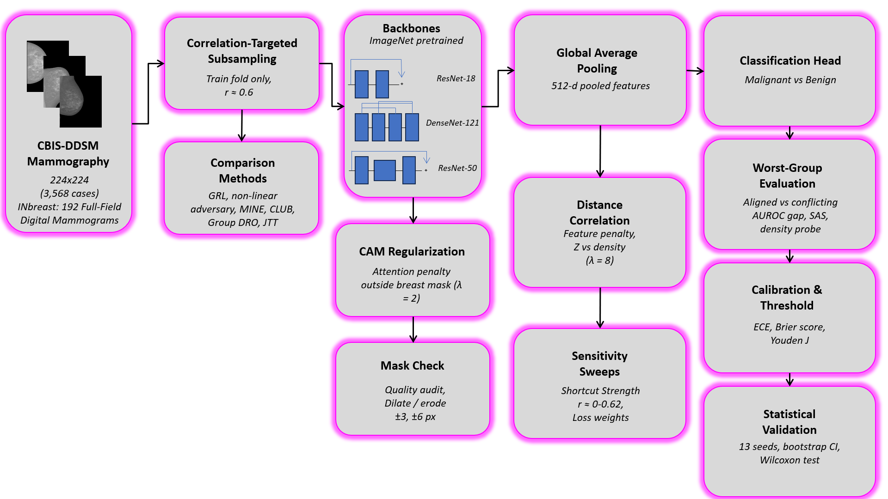

Research
Method

docs/assets/figures/architecture.pngThe network#
- Backbone: ResNet-18, pretrained on ImageNet. Its 512 pooled features go to one linear layer that predicts benign or malignant.
- Input: each mammogram is resized to 224 × 224, copied into three channels, and randomly flipped left–right during training.
- Breast outline: for every image, a breast mask is found automatically (Otsu threshold on a lightly blurred image, keeping the largest region). The mask is used by the attention penalty and by the SAS measure. Its quality is checked on the Calibration and mask checks page.
- Extra backbones for the robustness tests: DenseNet-121 and ResNet-50.
The five training methods#
All five use the same network, data and splits within each run, so they can be compared run by run.
Plain training on the cancer label, with nothing extra.
A small extra head tries to guess density from the features. A gradient reversal layer flips its learning signal, so the backbone is pushed to hide density (Ganin & Lempitsky, 2015).
Default settings: reversal strength rising to λ = 5 over the first eight epochs, extra loss weight 2, and the extra head reset every four epochs. Seven other settings are tried on the Adversaries and published methods page.
Adds a penalty equal to the distance correlation (Székely et al., 2007) between the features \(z\) and density \(d\) in each batch. Unlike an adversary, this is a fixed formula, so it cannot be "fooled" during training. Weight 8, reached over eight epochs.
Builds the model's heat map directly from its last feature map and its output weights. For this kind of network this heat map is the same as Grad-CAM (Zhou et al., 2016; Selvaraju et al., 2017), so training and testing measure the same thing. The penalty is the share of the heat map outside the breast mask \(M\). Weight 2, reached over eight epochs.
Distance correlation and CAM regularization together, with the same weights as above.
Each penalty is switched on gradually over the first eight epochs, and the best model is only chosen after that.
Methods from other papers#
These published methods are trained on exactly the same data for comparison:
| Method | What it targets |
|---|---|
| Two-layer adversary (Müller et al., 2024) | Features |
| MINE penalty (Belghazi et al., 2018; Müller et al., 2024) | Features, via mutual information |
| CLUB (Cheng et al., 2020) | Features, via mutual information |
| Group DRO (Sagawa et al., 2020) | Weights the worst-off group |
| JTT (Liu et al., 2021) | Weights the hardest examples |
See the Adversaries and published methods page for their results.